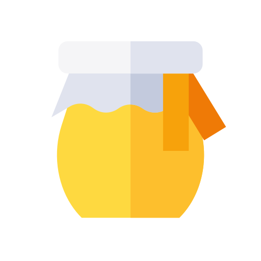

<header>
  <!-- <div class="logo"></div> -->
  <div class="header">
    <a routerLink="/write-message" class="logo">
      <i class="fas fa-radiation logo-icon"></i>
      <div class="ang-title">
        {{ title }}
      </div>
    </a>

    <div class="right-side-menu">
      <div class="menu-icon">
        <a routerLink="/wipes">
          <i class="fas fa-home"></i>
        </a>
      </div>

      <div class="menu-icon">
        <!-- Hard coded for testing purpose... need to modify this-->
        <a [routerLink]="['chat/', wipeService.currentWiperie]">
          <i class="fas fa-comment-dots"></i>
        </a>
      </div>

      <div class="menu-icon">
        <!-- this does not work because it should go to  "/crafts/:wipe_id" and because there are no default wipe...-->
        <a [routerLink]="['crafts/', wipeService.currentWiperie]">
          <i class="fas fa-tools"></i>
        </a>
      </div>

      <div class="menu-icon">
        <i class="fas fa-bars dropbtn" onclick="drop()"></i>
        <div id="myDropdown" class="dropdown-content">
          <a href="#"> <i class="fas fa-sign-in-alt"></i> Connexion</a>
          <a routerLink="/wipes"> <i class="fas fa-user"></i> My profile</a>
          <a (click)="logout()"> <i class="fas fa-sign-out-alt"></i> Log out</a>
        </div>
      </div>
    </div>
  </div>
</header>
<router-outlet></router-outlet>
